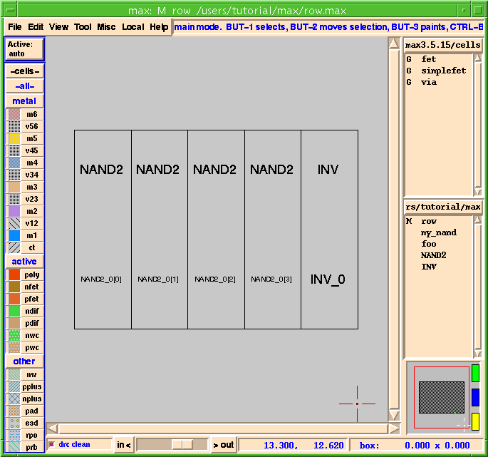
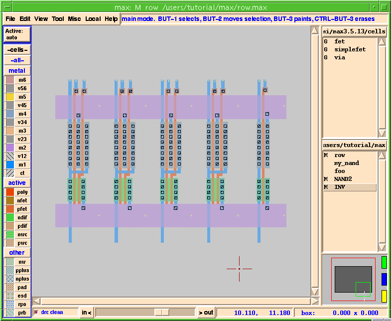
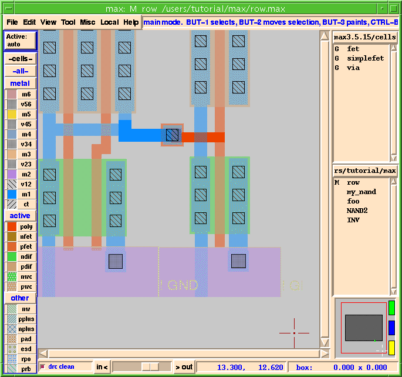

MAX Layout Environment Tutorial |
Part 3
Bigger Designs and Hierarchy
- Now let's use our NAND gate and an inverter cell to build something a little bigger.
- You should now be editing
row.max.
- Look up at the title bar. It should say
max: row.
- This should drop an instance of
NAND2into your row cell. Note that this cell looks a lot like theNANDcell you just laid out; however, to make life easier for you, we have made sure the power rails will line up with the other cells in the library.
Figure 25: MAX Command Hierarchy

- Place it to the right of
NAND2so that it abuts just as the array ofNAND2cells abut, as shown in Figure 25.
- You can zoom in while you are moving an object using z or Shift-Z or j. Or, you can place the object and then zoom in and use the arrow keys for more precise placement. You can also use the
Aligncommand to help align the bottom edges.
- Your layout window should now look like Figure 25.
Show/Hide Internals
- You may now want to see what's inside of the
NAND2cells and the inverter.
Push, Pop, and Edit in Place
- OK, now that we are here, let's say our boss comes over again and says: "Sorry, but you need to bring the outputs to the bottom of the cells".
- There are two ways to do this. We will use one method on the
INVcell and the other (just to be different) on theNAND2cell.
- Once inside the cell, add the output wire as you did before using the wire mode. Refer to Figure 20.
- Now let's edit the
NAND2cell. To do this one we are going to use theEdit Cell or Object in Placeoption from theViewmenu.
- Notice that the
NAND2cell you selected should now appear darker than the other cells. This tells you that you are now editing that cell.
- Your row cell should now look like Figure 26.
Figure 26: Outputs Brought Out to Bottom

- Now, just for grins, let's wire up two of the gates. Since we want to wire them up in
row.maxand NOT inNAND2.max, we must first make surerow.maxis our edit cell.
- You can also tell which cell you are editing because it tells you in the
MAX Title Bar.
- To get back to
row.max(if you're not there already) there are several methods:
- In general, push, pop, and edit in place work well for cells in the same hierarchy, while using the
Cell Listboxes is the preferred method for traversing larger, less connected databases.
- Notice that these wires are once again darker than the wires in the cells.
- Figure 27 shows a zoomed in view of a couple of gates wired up within
row.max.You can see that the wires inrow.max(the current edit cell) are darker than the wires contained withinNAND2.maxandINV.max.
Figure 27: Cells Wired Up

- Now let's save our work.
- This saves the current edit cell row, as well as any modified cells that are instantiated in row.
- If you have made changes to cells
fooormy_nandsince your last save, you'll get a warning popup message. You can eitherExit and Lose Changes, orCanceland save the cells.
| ----- Micro Magic ----- |